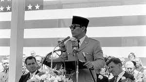
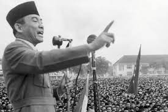

|
1. MAKNA DEMOKRASI TERPIMPIN / ORDE LAMA

Demokrasi terpimpin atau Orde Lama (1959-1965) adalah masa ketika Soekarno (Presiden pertama Indonesia) berkuasa
di bawah naungan Undang-undang Dasar 1945 yang asli. Demokrasi terpimpin sendiri adalah sebuah sistem demokrasi yang
seluruh sistem demokrasi yang seluruh keputusan serta pemikiran berpusat pada pemimpin negara.
2. BAGIAMANA SEJARAH DEMOKRASI TERPIMPIN DAPAT TERBENTUK?
Masa Demokrasi Terpimpin ini terjadi ketika Indonesia menerapkan sistem pemerintahan dengan seluruh keputusan pemerintah
berpusat pada kepala negara. Pada saat itu, jabatan kepala negara dipegang oleh Ir. Soekarno. Masa ini berlangsung sejak
dikeluarkannya Dekrit Presiden 5 Juli 1959 sampai 1965. Sejak berakhirnya pemilu pada 1955, Soekarno sudah menunjukkan
gejala ketidaksenangannya pada partai politik. Karena partai politik sangat berorientasi pada kepentingan ideologinya
sendiri, dan kurang memperhatikan kepentingan politik nasional secara menyeluruh.
Selain itu, Soekarno melontarkan gagasan bahwa demokrasi parlementer tidak sesuai dengan kepribadian bangsa Indonesia yang
dijiwai semangat kekeluargaan dan gotong royong. Politik pada masa ini diwarnai oleh tolok ukur yang sangat kuat antara
ketiga kekuatan politik utama waktu itu, yakni : Presiden Soekarno, Partai Komuni Indonesia (PKI), dan Angkatan Darat.
3. CIRI-CIRI DEMOKRASI TERPIMPIN

✩ Adanya penggabungan sistem kepartaian dengan terbentuknya DPR-GR.
Meskipun memiliki lembaga legislatif DPR, nyatanya lembaga ini lemah dalam sistem politik begitu pula terkait hak asasi manusia.
✩ Dominasi Kekuatan Politik di Tangan Presiden
Presiden memiliki kekuasaan yang sangat besar, termasuk kekuasaan untuk membubarkan parlemen, mengangkat dan memberhentikan menteri,
serta mengeluarkan peraturan perundang-undangan.
✩ Pembatasan Hak Politik Rakyat
Hak-hak politik rakyat, seperti kebebasan berpendapat, berserikat, dan berkumpul, dibatasi. Pemerintah sering kali menggunakan
kekerasan untuk menekan kritik terhadap kebijakan dan tindakan pemerintah.
✩ Munculnya partai penguasa/partai mayoritas
Partai-partai politik yang tidak mendukung pemerintah ditekan atau bahkan dibubarkan. Partai Demokrasi Indonesia (PDI) menjadi
partai penguasa dan memiliki banyak anggota di parlemen.
✩ Semakin besar peran militer dalam Dwifungsi ABRI.
Militer tidak hanya berperan dalam bidang pertahanan dan keamanan, tetapi juga dalam bidang politik dan ekonomi.
✩ Politik luar negeri Oldefo-Nefo.
Indonesia menganut politik luar negeri yang berkiblat pada negara-negara sosialis dan non-blok.
|
4. 2 SISI DIDALAM DEMOKRASI TERPIMPIN
Demokrasi Terpimpin ini memiliki beberapa hal positif yang membuat demokrasi terpimpin ini semakin baik. Salah satu diantaranya
merupakan mampu dijadikan memperbaiki kekurangan demokrasi liberal, dan juga bisa memupuk rasa ingin gotong royong yang lebih tinggi.
Meski semuanya terlihat baik-baik saja, pastinya setiap hal ada positif dan negatifnya. Salah satu contoh sikap negatifnya merupakan
terjadinya konsentrasi kekuasaan di tangan presiden. Presiden ini memiliki kekuasaan yang sangat besar, termasuk kekuasaan untuk
membubarkan parlemen, mengangkat dan memberhentikan menteri, serta mengeluarkan peraturan perundang-undangan. Ini termasuk hal yang cenderung
tidak baik dan relatif negatif.
Selain itu, ada juga pembatasan hak-hak politik rakyat. Hak-hak politik rakyat, seperti kebebasan
berpendapat, berserikat, dan berkumpul, dibatasi. Tidak sebatas situ saja, namun adanya korpusi, kolusi dan juga nepotisme yang muncul.
yebabkan terjadinya kg akhirnya berujung pada peristiwa G30S.
6. PERAN PKI PADA MASA DEMOKRASI TERPIMPIN
Partai Komunis Indonesia (PKI) memiliki peran yang sangat penting pada masa Demokrasi Terpimpin (1959-1965).
PKI menjadi kekuatan politik yang dominan, dan bahkan sempat menjadi partai politik terbesar di Indonesia.
Peran PKI pada masa Demokrasi Terpimpin dapat dibagi menjadi dua, yaitu:
❀ Peran PKI dalam Politik
PKI menyambut Demokrasi Terpimpin dengan hangat. PKI menganggap bahwa Demokrasi Terpimpin adalah sistem pemerintahan yang dapat
mengakomodasi kepentingannya.PKI mendapatkan dukungan dari Presiden Soekarno, yang menerapkan politik Nasakom (Nasionalisme,
Agama, dan Komunisme). PKI menjadi salah satu unsur Nasakom yang penting.PKI memiliki perwakilan yang besar di kabinet, dan
para kader PKI juga menduduki posisi penting dalam pemerintahan. PKI juga berperan penting dalam mendukung kebijakan-kebijakan
Presiden Soekarno, seperti kebijakan konfrontasi terhadap negara Malaysia
❀ Peran PKI dalam Ekonomi
PKI juga berperan penting dalam ekonomi pada masa Demokrasi Terpimpin. PKI memiliki pengaruh yang besar di kalangan petani dan buruh.
PKI juga memiliki beberapa perusahaan yang dikelola oleh kader-kadernya. PKI berperan dalam mengorganisir petani dan buruh untuk mendukung
kebijakan-kebijakan pemerintah. PKI juga berperan dalam meningkatkan kesejahteraan petani dan buruh.
|
7. PERAN ANGKATAN DARAT PADA MASA DEMOKRASI TERPIMPIN
Angkatan Darat (AD) memiliki peran yang sangat penting pada masa Demokrasi Terpimpin (1959-1965). AD menjadi kekuatan politik yang dominan,
dan bahkan sempat menguasai pemerintahan. Peran AD pada masa Demokrasi Terpimpin dapat dibagi menjadi dua, yaitu:
✿ Peran Angkatan Darat dalam politik
Angkatan Darat (AD) memiliki peran krusial dalam munculnya konsep Demokrasi Terpimpin. Pada tahun 1958, AD melaksanakan tindakan militer untuk
menghentikan pemberontakan PRRI/Permesta, berhasil meraih dukungan luas dari masyarakat.
Setelah itu, AD mengusulkan ide Demokrasi Terpimpin sebagai sistem pemerintahan yang kuat dan otoritatif, bertujuan mengatasi krisis politik
serta mengembalikan ketertiban negara. Konsep ini memperoleh dukungan dari Presiden Soekarno dan diimplementasikan melalui Dekrit Presiden pada
5 Juli 1959.
Dengan diberlakukannya Dekrit Presiden 5 Juli 1959, AD menjadi kekuatan politik yang dominan. AD memiliki representasi besar di dalam kabinet,
dan para perwira AD menduduki posisi kunci dalam struktur pemerintahan. AD juga turut serta dalam mengatasi gerakan-gerakan yang dianggap mengancam
stabilitas politik, termasuk Gerakan 30 September/PKI.
✿ Peran Angkatan Darat Dalam Keamanan
Angkatan Darat (AD) turut memainkan peran yang signifikan dalam memelihara keamanan negara selama era Demokrasi Terpimpin. AD berhasil mengatasi
berbagai pemberontakan pada masa itu, termasuk PRRI/Permesta, DI/TII, dan G30S. Selain itu, AD juga berkontribusi dalam menjaga stabilitas
keamanan domestik, termasuk penanganan kerusuhan yang muncul di berbagai wilayah.
8. PENERAPAN DI MASA DEMOKRASI TERPIMPIN
Pada tahun 1959, Soekarno mengeluarkan Dekrit Presiden pada 5 Juli yang mengakhiri berlakunya Undang-Undang Dasar Sementara 1950 dan mengembalikan
UUD 1945. Ini menandai dimulainya era Demokrasi Terpimpin di Indonesia, di mana Soekarno memperoleh kekuasaan yang diperluas sebagai presiden.Bersamaan
dengan pengembalian ke UUD 1945, Konstituante (badan legislatif yang bertugas menyusun konstitusi baru) dibubarkan oleh Soekarno karena gagal mencapai
kesepakatan untuk menyusun konstitusi baru. Soekarno membentuk Kabinet Gotong Royong pada Juli 1959, yang terdiri dari perwakilan berbagai kelompok politik,
termasuk militer dan partai politik, mencerminkan prinsip musyawarah untuk mufakat dalam konsep Demokrasi Terpimpin.
Pada tahun 1959, Soekarno juga mengumumkan pembentukan Kabinet Kerja yang melibatkan militer, birokrat, dan tokoh politik, menunjukkan pengaruh
militer dalam pemerintahan dan menciptakan keseimbangan kekuasaan yang baru. Selama masa Demokrasi Terpimpin, terjadi beberapa operasi militer,
seperti Operasi Trikora di Irian Barat (sekarang Papua) dan operasi militer di Aceh, untuk menindak pemberontakan dan separatisme.
Ideologi Nasionalisme, Agama, dan Komunisme (Nasakom) diperkuat dalam Demokrasi Terpimpin, mencoba menyatukan berbagai kekuatan politik di Indonesia.
Namun, Demokrasi Terpimpin berakhir pada tahun 1965 setelah terjadinya Gerakan 30 September/Partai Komunis Indonesia (G30S/PKI), yang memicu pemberontakan
dan perubahan besar dalam dinamika politik Indonesia. Setelah itu, Orde Baru di bawah Soeharto menggantikan Demokrasi Terpimpin.
|